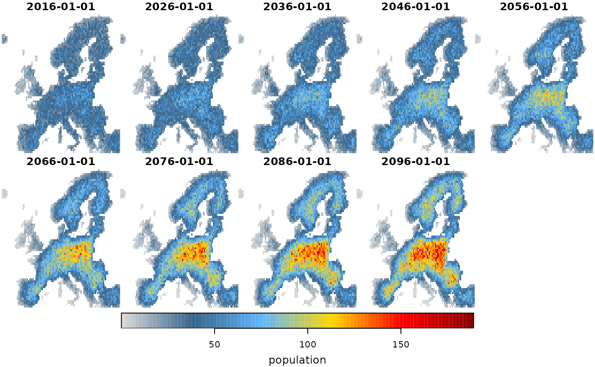
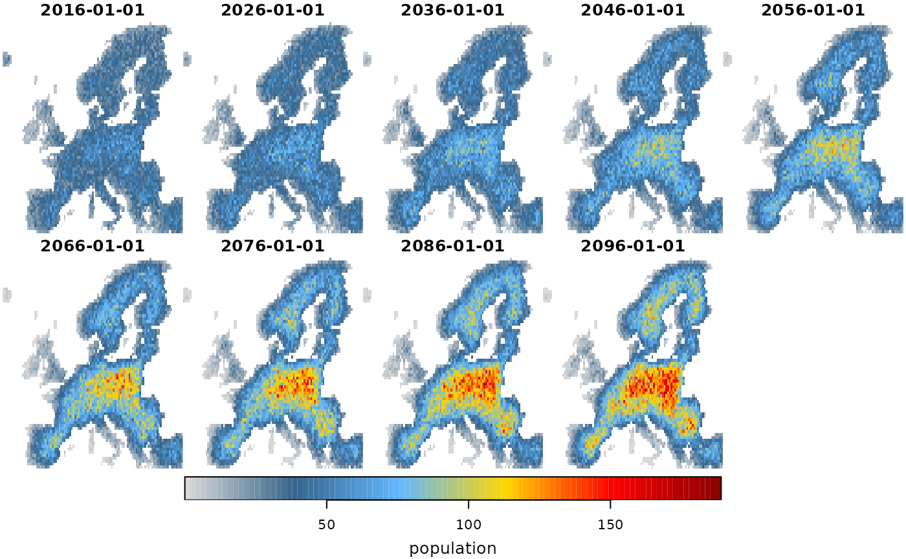

Mechanistic species distribution modelling
Martin Jung
2024-08-25
Source:vignettes/articles/05_mechanistic_estimation.Rmd
05_mechanistic_estimation.RmdMechanistic species distribution modelling
This vignette describes the available options of incorporating mechanistic modelling approaches in the ibis.iSDM package. These approaches can broadly be separated as those that are “added” to existing modelling routines, or how ibis.iSDM outputs can be used as input in mechanistic modelling. For both this package provides some basic wrappers.
Before we delve into the options to do mechanistic SDMs in the ibis.iSDM package, it is useful to remind us what the term ‘mechanism’ actually means. In the literature there are a range of different definitions, sometimes referring to mechanistic SDMs as those that incorporate ecological processes (e.g. demography, dispersal, eco-evolutionary principles). Yet often, correlative SDMs are also declared “mechanistic” if they somehow incorporate a specific constrain or response function towards an environmental variable. For example, the micro-climatic limits to the persistence of a species Briscoe et al. 2023, or the presence of biotic interactions (estimated through a separate SDM of a different species) are also sometimes referred to as limiting mechanisms (Ohlmann et al. 2023).
The latter approaches - which are largely a fine-tuning of specific
response function - can to some extent be emulated through creating
specific derivates or by adding covariate priors
(add_priors()) or model predictors
(add_predictors_model()) to a SDM. Further methods will be
added to the package as they become available or can be readily
incorporated into the modelling framework. Some types of integration can
also be directly modelled through integration. More details are provided
in other vignettes such as the data preparation for creating
derivates or the vignette on data
integration. Users of the package are also directed to the various
add_constraint() functions, many of which enable
corrections of projected scenarios.
Adding ecological processes to correlative SDMs
There are a range of wrappers implemented in ibis.iSDM that
allow a convenient passing of outputs or parameters to other mechanistic
modelling packages. These wrappers support the convenient addition of
ecological processes such as dispersal to scenarios data integration. Or they
enable ibis.iSDM outputs to directly become inputs to further
simulations. In case key parameters are not available, package users are
encouraged to check out the various options in the
add_constraint() function.
Most of these mechanistic approaches require quite extensive model understanding and in many cases additional training. Furthermore a range of parameters are usually required so that outputs are meaningful. It is beyond the scope of this vignette to provide an introduction to the various models. Rather, it is only demonstrated how linkages between ibis.iSDM and other models can be made, and the reader is referred to the original publication underlying each approach (see help page for references).
Adding dispersal to scenarios with KISSMig
The KISSMig model provide a simple model to estimate and limit dispersal in species distribution models (Nobis & Normand, 2014). It does not include any ecological mechanism related to recruitment as such, but instead works as a simple stochastic migration estimator that allows the inclusion of time-lagged dispersal to local neighborhoods. In the ibis.iSDM package the KISSMig simulator can be added as a dispersal constraint (among others) to scenario objects.
Example:
library(ibis.iSDM)
library(terra)
#> terra 1.7.78
#>
#> Attaching package: 'terra'
#> The following object is masked from 'package:ibis.iSDM':
#>
#> modal
library(ggplot2)
# Don't print out as many messages
options("ibis.setupmessages" = FALSE)
# Background and biodiversity data
background <- terra::rast(system.file('extdata/europegrid_50km.tif', package='ibis.iSDM'))
virtual_points <- sf::st_read(system.file('extdata/input_data.gpkg', package='ibis.iSDM'), 'points', quiet = TRUE)
# Add some pseudo-absence information for later
poa <- virtual_points |> add_pseudoabsence(field_occurrence = 'Observed',
template = background)
# Note we are loading different predictors than in previous examples
# These are in netcdf4 format, a format specific for storing spatial-temporal data including metadata.
ll <- list.files(system.file("extdata/predictors_presfuture/", package = "ibis.iSDM", mustWork = TRUE), "*.nc",full.names = TRUE)
# From those list of predictors are first loading the current ones as raster data
# We are loading only data from the very first, contemporary time step for model fitting
pred_current <- terra::rast()
for(i in ll) suppressWarnings( pred_current <- c(pred_current, terra::rast(i, lyrs = 1) ) )
names(pred_current) <- tools::file_path_sans_ext( basename(ll) )
# Get future predictors
# These we will load in some time steps using the stars package and ignoring the first time step
suppressWarnings( pred_future <- stars::read_stars(ll) |> stars:::slice.stars('Time', seq(2,86,by=10)) )
sf::st_crs(pred_future) <- sf::st_crs(4326) # Set projection
# Rename future predictors to those of current
names(pred_future) <- names(pred_current)
# ------ #
# Fit a model
fit <- distribution(background) |>
add_biodiversity_poipa(poa, field_occurrence = 'Observed', name = 'Virtual points') |>
# Note that we scale the predictors here
add_predictors(pred_current, transform = 'scale',derivates = 'none') |>
engine_glmnet(alpha = 0) |>
# Train the model
train(verbose = FALSE) |>
# Add simple percentile thresholds
threshold(method = 'percentile', value = .33)
# Show the threshold
fit$plot_threshold()
Now lets add KISSMig as dispersal constraints. The constrain
directly used the fitted suitability estimates from each projected
timestep and also makes use of the created thresholded layer. Per
time-step dispersal events are stochastically simulated and constraint
range expansions in the next modelling steps. See
?kissmig::kissmig and the help-page
for further help and explanations of parameters.
# Create a scenario object
sc <- scenario(fit) |>
# Apply the same variable transformations as above.
add_predictors(pred_future, transform = 'scale') |>
# Calculate thresholds at each time step. The threshold estimate is taken from
# the fitted model object.
threshold()
#> Warning in add_predictors(scenario(fit), pred_future, transform = "scale"):
#> State variable of transformation not found?
# Add KISSMig constraint
sc1 <- sc |>
add_constraint_dispersal(method = "kissmig",
type = "DIS", # Final distribution result
value = 10, # Number of iteration steps
# These parameters are for KISSMig and get passed on
# Probablitiy of local extinction between iterations
pext = 0.5,
# Probability corner cells are colonized.
pcor = 0.2
)
sc2 <- sc |>
add_constraint_dispersal(method = "kissmig",
type = "DIS", # Final distribution result
value = 10, # Number of iteration steps
# These parameters are for KISSMig and get passed on
# Probablitiy of local extinction between iterations
pext = 0.9,
# Probability corner cells are colonized.
pcor = 0.1
)
# Project two scenarios with varying local extinction probability
df1 <- project(sc1, verbose = FALSE) |> summary()
#> Linking to GEOS 3.10.2, GDAL 3.4.1, PROJ 8.2.1; sf_use_s2() is FALSE
df2 <- project(sc2, verbose = FALSE) |> summary()
df <- dplyr::bind_rows(df1 |> dplyr::mutate(scenario = "low"),
df2 |> dplyr::mutate(scenario = "high") )
# ------ #
ggplot(df, aes(x = band, y= area_km2/1e6,
group = scenario, color = scenario)) +
theme_bw(base_size = 16) +
geom_line() +
labs(x = "Time", y = "Occupied area (Million km2)")
Adding dispersal to scenarios with MIGCLIM
Another dispersal simulator is MIGCLIM (Engler et al. 2014), a stochastic simulator which innovatively allows to differentiate between short and long-distance dispersal events as well as varying propagule pressure. Unfortunately is currently not available on CRAN anymore (stand September 2023), possibly because of lack of maintenance or missing dependency. The package can still be downloaded from github however (https://github.com/robinengler/MigClim/).
Assuming the user is able to install the MigClim package with all it’s dependencies (some of which have also disappared from CRAN), it can be run in ibis.iSDM as follows:
prj <- scenario(fit) |>
# Apply the same variable transformations as above.
add_predictors(pred_future, transform = 'scale') |>
# Calculate thresholds at each time step. The threshold estimate is taken from
# the fitted model object.
threshold() |>
# Check the help files for the function for an explanation of the parameters.
add_constraint_MigClim(rcThresholdMode = 'continuous',
dispSteps = 1,
dispKernel = c(1.0, 0.4, 0.16, 0.06, 0.03),
barrierType = "strong",
lddFreq = 0, lddRange = c(1000, 10000),
iniMatAge = 1, propaguleProdProb = c(0.2, 0.6,0.8, 0.95),
replicateNb = 10) |>
# Project the model
project()
# MIGCLIM outputs are provided a single updated layer and can be plotted through
# a customized plotting function.
prj$plot_migclim()This example will be updated as an update for current R versions (>3.0) becomes available.
Simulating spatial-explicit population abundance with
steps
The steps package implements a spatial-temporal explicit metapopulation simulator (Visintin et al. 2021) that is able to account for varying vital rates, dispersal with barriers and density dependence. steps is a simulator, thus makes use of a range of parameters and critical correlative assumptions to estimate for example abundance of a given time step.
In the ibis.iSDM package the linkage to steps can be established directly in the scenario projections by simply adding it as a separate module. When added, steps is used to make spatial-temporal abundance estimates that are aligned with each projection time step, eventual specified barriers and the provided parameters with regards to vital rates and density-dependence.
Note: The wrapper functionality implemented in the ibis.iSDM package is based on the assumption that higher habitat suitability (as estimated by a correlative SDM) is linearly correlated to higher population abundance. It should be noted that such assumptions have been questioned before and should be interpreted with caution (Lee-Yaw et al. 2021).
Users should always clearly understand the rationale behind parameter choices!
if("steps" %in% installed.packages()[,1]){
require("steps")
# Define some arbitrary vital rates for the transition for this purpose
# Define vital rates
vt <- matrix(c(0.0,0.52,0.75,
0.52,0.28,0.0,
0.0,0.52,0.75),
nrow = 3, ncol = 3, byrow = TRUE)
colnames(vt) <- rownames(vt) <- c('juvenile','subadult','adult')
# We again specify a scenario as before using the fitted model
prj <- scenario(fit) |>
# Apply the same variable transformations as above.
add_predictors(pred_future, transform = 'scale') |>
# Calculate thresholds at each time step. The threshold estimate is taken from
# the fitted model object.
threshold() |>
# We then specify that we we
simulate_population_steps(vital_rates = vt)
# Notice how we have added steps as additional simulation outcome
prj
# Now project
scenario1 <- project(prj)
plot(scenario1, "population")
# Also see a different one where we add a dispersal constraint and density dependence
dispersal <- steps::fast_dispersal(dispersal_kernel = steps::exponential_dispersal_kernel(distance_decay = 1))
scenario2 <- project(prj |>
simulate_population_steps(vt,
dispersal = dispersal,
density_dependence = steps::ceiling_density(3) ) )
# We can see that the dispersal constraint and higher density dependence cleary
# results in a population abundance that tends to be concentrated in central Europe.
plot(scenario2, "population")
}
#> Loading required package: steps
#> Warning in add_predictors(scenario(fit), pred_future, transform = "scale"):
#> State variable of transformation not found? 
